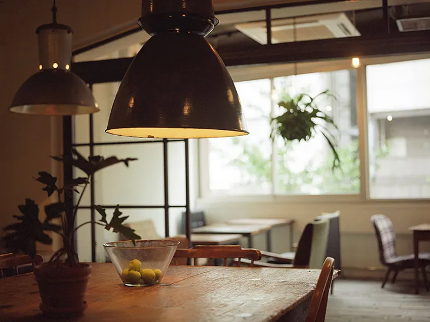
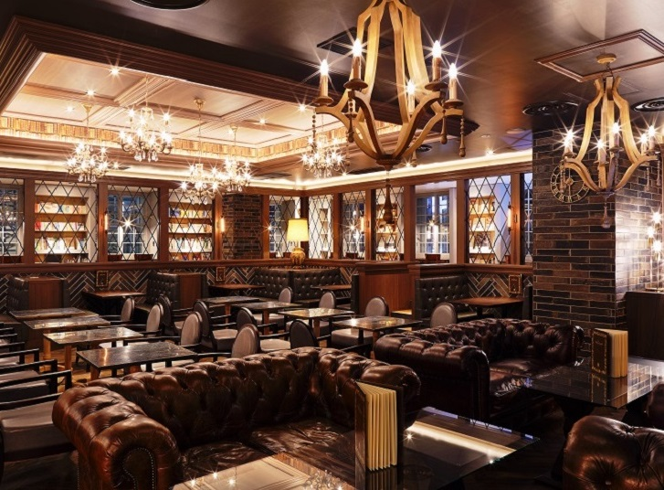

女子大生必見！友達との距離がぐっと近づく都内のカフェまとめ
May 20, 2023最近仲良くなった友達との関係をさらに深めたい……そんな女子大生必見！東京都内にあるおしゃれで美味しいカフェを紹介します。著者が訪れたカフェの中から、心からおすすめできるカフェを厳選しました。リラックスできるカフェで絶品スイーツとコミュニケーションを楽しみ、ぐっと距離を近づけましょう！
こんな人におすすめ！
- 友達とゆっくり話せる場所を探している人
- 店内の雰囲気やスイーツの見た目重視でカフェを選びたい人
- 予算に余裕のある人（下記参照）
予算（目安）
- ランチメニュー：1500円
- ディナーメニュー：2000円
- カフェメニュー（スイーツ＋ドリンク）：1500円
Coto Cafe

Cafe Information
【新宿三丁目駅から徒歩１分】新宿にあるCoto Cafeは、緑と木を基調としたおしゃれな店内が特徴的です。夜になると、キャンドルが各テーブルに灯され、ロマンティックな雰囲気が漂います。心地良い照明と落ち着いた雰囲気の中で、素敵なひとときを過ごしたい方には、ぜひこのカフェをおすすめします。こんな人におすすめ！
- 緑の雰囲気に癒されたい人
- おいしいスイーツを楽しみたい人
おすすめメニュー
- ガトーショコラ
- カクテル（ノンアルコール有）
備考
- ワンドリンク制
- 休日はとても混む
アクセス
- JR新宿駅東口徒歩８分
- 新宿３丁目駅E2徒歩1分
- 東新宿駅A1徒歩８分
基本情報
- 住所：〒160-0022東京都新宿区新宿5-17-6 中田ビル2F
- 電話番号： 03-6233-7782
- 営業時間：
【日〜木・祝日】
11:00〜20:00(L.o food 19:00/drink 19:30)
【金・土・祝前日】
11:00〜21:00(L.o food 20:00/drink 20:30)
日曜の翌日が祝日になる際、日曜日は23:00まで営業。
連休最終日が20:00閉店となります。
- 定休日：年中無休(臨時休業あり)
- 公式Webサイト：https://cotocafe.jp/
- 食べログ：https://tabelog.com/tokyo/A1304/A130401/13145454/
梟書茶房

Cafe Information
【池袋駅直結徒歩１分】本×コーヒーをコンセプトにしたこのカフェでは、購入するまで本のタイトルが分からないシークレットブックを購入できることで有名。まるで「ハリーポッター」に出てくるような内装の店内で食べるカフェメニューはおいしすぎて涙がでるかも？
こんな人におすすめ！
- 本が好きな人！
- ハリーポッターのような雰囲気の内装が好きな人！
おすすめメニュー
- パンケーキ
備考
- 休日はとても混む
アクセス
- 池袋駅直結
基本情報
- 住所：〒171-0021 東京都豊島区西池袋1-12-1 Esola(エソラ)池袋 4F
- 電話番号：03-3971-1020
- 営業時間：10:30～22:00（L.O.21:30）
- 定休日：無休（除く特定日）
- 公式Webサイト：https://www.doutor.co.jp/fukuro/
- 食べログ：https://tabelog.com/tokyo/A1305/A130501/13210443/